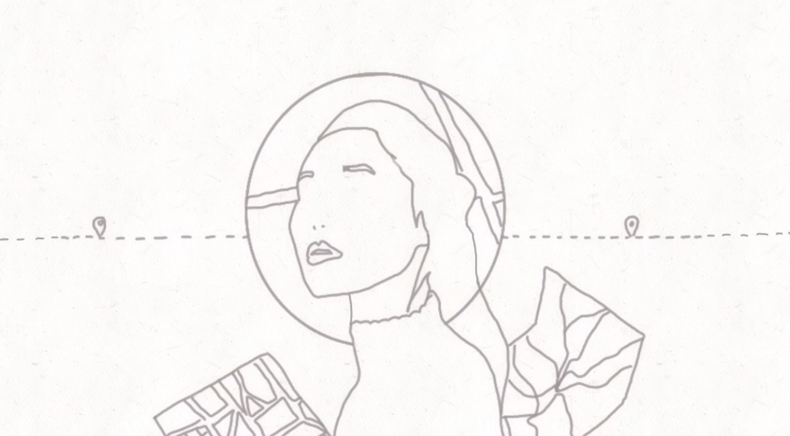

SELINA TU PORTFOLIO
SPECULATIVE FICTION

.png)
.png)
SPECULATIVE FICTION
My 2 minute animation short advertisement depicts a world where for women to feel safe in public spaces mens behaviour has to change.
A world where we felt safe, what would be the first thing you’d do. Walk fearlessly late night, go travel solo around the world. Can feel safe enough to not hold onto weapons such as a pocket knife or pepper spray when travelling. Safe apps can be deleted as they don’t need them anymore. Future urban planning and architecture designed from a woman’s perspective helps women feel safer when travelling especially in public transport locations. A women friendly city is a 24/7 vision urban environment with high visibility with little hiding spots and dark alleys. Eyes on the street street and building concept is designed and built to be equipped to handle strangers and to ensure safety of both residents and strangers. Women are more included in urban policy making and planning to re-design cities to be more inclusive of women and children’s needs. As previously the cities are designed by a male dominated committee. Victims have a safe place to and voice to speak up about the predator and not feel shame. Predators from a higher place are not able to use their power to silence victims. They get on a register list and and are punished for their actions.Victims are safe to bring a perpetrators name into the police and they can bring it to court to have mandatory compulsory medicine being taken.My work shows a ‘squiggle vision’ art style with a hand drawn feel. The animation is extremely shuddering and pulsing to depict the intense emotion and alertness. The progression of my artwork stemmed from showcasing the present problems of society which transitions into a more a positive hopeful light depicting a women friendly world.